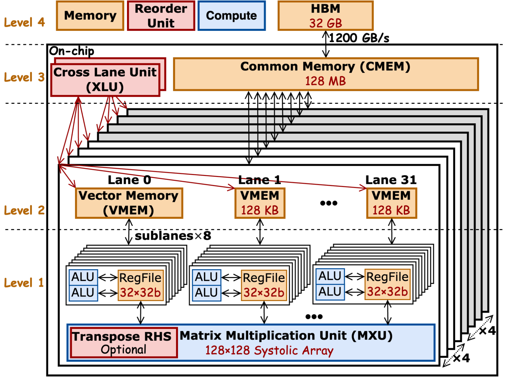
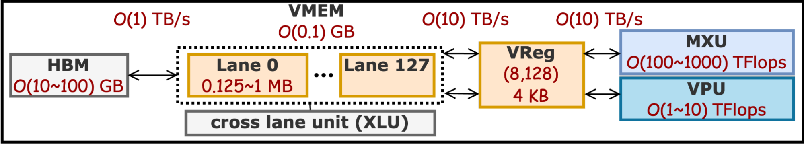

Chapter 1: TPU Setup
-
Step 1: Create a Google Project at tutorial.
Obtain the name of the project as<google_project_name>and Google Project ID from the created project. -
Step 2: Apply for the Tree-tier TPU trail for 30 days at TRC
Once submitted the request, an email will be shot to you within one day, where there is a link to fill in a survey with your Google project ID.
-
Step 3: Launch TPU VM.
You could do it over GUI or gcloud cli (in your local machine) to create a TPU VM. I give the gcloud cli as it works for all generations (>=v4) of TPUs.
For TPUv4,
gcloud config set project <google_project_name> gcloud config set compute/zone us-central2-b gcloud alpha compute tpus queued-resources create <google_project_name> --node-id=<your_favoriate_node_name> \ --zone=us-central2-b \ --accelerator-type=v4-8 \ --runtime-version=v2-alpha-tpuv4For TPUv5e,
gcloud config set project <google_project_name> gcloud config set compute/zone us-west1-c gcloud alpha compute tpus queued-resources create <google_project_name> --node-id=<your_favoriate_node_name> \ --zone=us-west1-c \ --accelerator-type=v5litepod-4 \ --runtime-version=v2-alpha-tpuv5-lite \ --provisioning-model=spotFor TPUv5p,
gcloud config set project <google_project_name> gcloud config set compute/zone us-east5-a gcloud alpha compute tpus queued-resources create <google_project_name> --node-id=<your_favoriate_node_name> \ --zone=us-east5-a \ --accelerator-type=v5p-8 \ --runtime-version=v2-alpha-tpuv5 \ --provisioning-model=spotFor TPUv6e,
gcloud config set project <google_project_name> gcloud config set compute/zone us-east1-d gcloud alpha compute tpus queued-resources create <google_project_name> --node-id=<your_favoriate_node_name> \ --zone=us-east1-d \ --accelerator-type=v6e-1 \ --runtime-version=v2-alpha-tpuv6e \ --provisioning-model=spotNote: TPUv5e, TPUv5p and TPUv6e might be easier to get under
provisioning-modelas spot or flex-start (with a specific time range) because they are popular resources, and Google cloud can preempt it if there are tasks with higher priority requiring these resources. But you could get a long-term active TPUv4 VM as it's less demanding by other tasks. -
Step 4: Setup Remote SSH (VSCode or Cursor) to TPU VM
Once the requested TPU vm is up and running as shown in Google console, you could use gcloud to forward the SSH port of the remote machine to a port of local machine and setup VSCode remote ssh.
You need to first setup local ssh key to Google's compute engine, following link. After your follow the instructions on the page, the ssh key will be dumped here
<path_to_local_user>/.ssh/google_compute_engine.gcloud compute tpus tpu-vm ssh <gcloud_user_name>@<your_favoriate_node_name> -- -L 9009:localhost:22Where
9009is the port of local machine, while22is the SSH port of the TPU vm.After you set it up, you could configure VSCode to use the remote SSH package link to remotely access into TPUvm.
Host tpu-vm User <gcloud_user_name> HostName localhost Port 9009 IdentityFile <path_to_local_user>/.ssh/google_compute_engineAfter this, you should follow the steps on link to log into TPU VM.
Chapter 2: Environment Setup
Inside TPU VM, please do following setup to configure the environment.
-
Step 1: install miniconda
wget https://repo.anaconda.com/miniconda/Miniconda3-latest-Linux-x86_64.sh chmod +x ./Miniconda3-latest-Linux-x86_64.sh ./Miniconda3-latest-Linux-x86_64.sh # follow instructions and set up launch into .bashrc -
Step 2: create environment and install required packages
git clone https://github.com/EfficientPPML/CROSS source ~/.bashrc conda create --name jaxite python=3.13 conda activate jaxite pip install -U "jax[tpu]" pip install xprof pip install absl-py pip install pandas pip install gmpy2 # Try to run a simple test python script.py
where
script.py is the script you want to run in the jaxite_word folder.
Chapter 3: TPU Architecture
Part 1: TPU micro-architecture (using TPUv4 as an example)
AI accelerators such as TPU feature abundant memory and compute which show great potential for HE acceleration.
- Large Compute Array (Parallelism): Each MXU in AI accelerators is 32x larger (e.g., 128x128 in TPUv4) than those in GPUs (typically 4,4,4-Matrix Multiplication). The larger size of MXUs increases on-chip data reuse within the two-dimensional computation arrays, enhancing throughput per watt. Moreover, a sea of 2048 SIMD ALUs, sharing the same VRegs with MXUs and further increasing data reuse.
- Large On-chip Memory: AI accelerators feature large on-chip memory, e.g. a single Google TPU v4 chip has 160 MB of on-chip memory, including 128 MB CMEM and 32 MB VMEM array, which is 20x/4x larger than the AMD MI100 / NVIDIA A100. This substantial on-chip capacity can accommodate entire ciphertexts to avoid its repeated accesses from off-chip memory, alleviating memory bottleneck inherent in HE workloads for better performance and efficiency.
- On-chip Data Management Units: TPU has specialized Cross Lane Unit (XLU), which could (1) transpose data sitting in on-chip VMEM, (2) shuffle data among VMEMs, and (3) accumulate partial results from VMEMs in different lanes into final results.
Some functionalities of computation and how is it useful for ML is introduced in this repo: https://jax-ml.github.io/scaling-book/
From a programmer's perspective, a TPU chip mainly consists of three powerful components working together:
- MXU (Matrix Multiplication Unit):
- What it does: Performs massive-scale matrix multiplications such as 8x128x128 matrix multiplication.
- This is the most powerful part of the TPU. It’s like a giant calculator dedicated to matrix math. A single MXU can be 32 times larger than those in a typical GPU, which serves as the key computational power of TPUs.
- VPU (Vector Processing Unit):
- What it does: Handles vector operations (like additions, subtractions, and other general math) that the MXU doesn't handle.
- It handles the simpler, non-matrix math tasks.
- VRegs (Vectorized Registers):
- What they are: A set of coarse-grained on-chip memory locations (4 KB each) shared by both the MXU and VPU.
- This is the temporary 'workbench' for the MXU and VPU. Data must be loaded into VRegs before any computation can begin. The most efficient way to use the TPU is to keep all the data here to avoid slow access to off-chip memory. The VRegs organize data in chunks of (8, 128) 32-bit values.
In short, TPU could be simply viewed as Big "Matrix Multiplication Unit (MXU)" and Big "Vector Processing Unit (VPU)" working on the same set of (8, 128) 32-bit registers (VReg, 4 KB each).
The Main Goal: The key to fast TPU code is to fully utilize the MXU and VPU by keeping data in the VRegs and minimizing slow data movement between memory locations.
Part 2: Tips for Writing Fast TPU Code
These tips focus on how to structure your code and data to get the most out of the TPU's architecture.
| Tip | What to Do | Why It Works |
|---|---|---|
| 1. Fully Utilize the VRegs | Make sure at least two dimensions of your tensor shapes are a multiple of 8 and 128. | The VRegs are optimized for data chunks of size (8, 128). If your data size isn't a multiple of these numbers, the TPU has to waste resources (VReg space and instructions) to process only a partial chunk. Matching the (8, 128) granularity ensures your data is perfectly aligned and can be processed in the fewest number of instructions. A simple example: for an operation like Vectorized Multiplication, if you use an unoptimized tensor shape of (4, 256), the data must be split, requiring two VRegs and resulting in only 50% utilization of the VReg slots and requiring two instructions to complete. By contrast, if you optimize your data shape to (8, 128), it perfectly aligns with the VReg's internal block size, requiring only 1 VReg to hold all the data and allowing the operation to complete in a single instruction, significantly boosting efficiency. |
| 2. Minimize Layout Transformations | Avoid adding explicit reshape or layout conversion instructions in your code. |
A layout conversion is when the TPU has to internally move or reorganize data inside its on-chip memory. This is non-computational work (it doesn't do any math) and adds extra explicit latency. |
| 3. Offload VPU Work to the MXU | Try to reform any vector-based math (VPU work) into low-precision dense matrix multiplication (MXU work). | The MXU is designed for matrix math and has a much higher throughput than the VPU. If you can creatively turn a VPU task into an MXU task (often by using low-precision data types), you switch the workload from the "Generalist" to the "Heavy Lifter," resulting in a massive speed boost. |
| 4. Shuffle Data at a Coarse Granularity | If you must shuffle or reorder data, do it at the large (8, 128) VReg chunk level. | Shuffling is a type of layout transformation. By moving data at the largest possible (8, 128) granularity, you minimize the total number of instructions the TPU needs to execute for the rearrangement, reducing the overall overhead. |
| 5. Hiding the off-chip memory access | Choose the granularity of data to be loaded such that the off-chip accessing latency could be hidden by the computation | Off-chip memory access latency could be hidden by carefully selecting a data-loading granularity that ensures the memory access time is less than the computation time. This optimization aims at reducing or eliminating the explicit off-chip data accessing latency among consecutive operations to maximize average compute utilization. |
Part 3: Useful Resources for TPU programming
- Multi-Chip Programming with JAX: Learn how to run a job on multiple TPU chips (less than 8 on a single host VM) by specifying the topology and sharding strategy: JAX Sharding Documentation.
- Custom Kernel Development with Pallas: TPU programming can be done using JAX (similar to NumPy) for high-level operations, or Pallas (Google’s equivalent of Triton) to create customized kernels with explicit control over data loading and computation granularity: Pallas Documentation.
Citation
If you find this tutorial helpful, feel free to:
- Star CROSS repo at https://github.com/EfficientPPML/CROSS
- Cite our paper with biblatex below:
@inproceedings{tong2025CROSS,
author = {Jianming Tong and Tianhao Huang and Jingtian Dang and Leo de Castro and Anirudh Itagi and Anupam
Golder and Asra Ali and Jevin Jiang and Jeremy Kun and Arvind and G. Edward Suh and Tushar Krishna},
title = {Leveraging ASIC AI Chips for Homomorphic Encryption},
year = {2026},
publisher = {2026 IEEE International Symposium on High Performance Computer Architecture (HPCA)},
address = {Australia},
keywords = {AI ASICs, TPU, Fully Homomorphic Encryption},
location = {Australia},
series = {HPCA'26} }